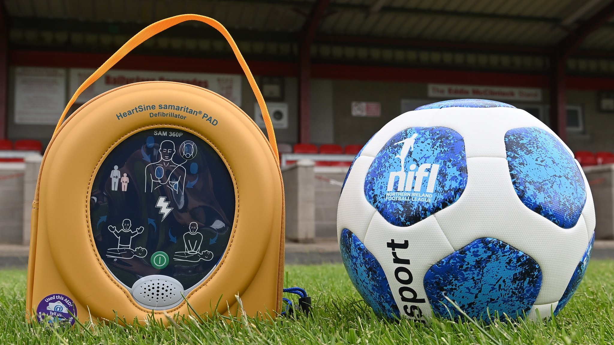

Brundall Bullfinches Mobile Defibrillator (AED) Fundraiser
January 7, 2025
We are raising funds to purchase a mobile defibrillator (AED) for a football club. Every second counts in a cardiac emergency. Whilst thankfully a rare occurrence, if someone suffers a sudden cardiac arrest, their chances of survival drop by 10% for every minute without a defibrillator (AED).
And whilst public AEDs are becoming increasingly common, they’re not always practical in an emergency. Calling 999, finding the nearest AED, and getting it back to the pitch could waste precious minutes—minutes that could mean the difference between life and death.
That’s why we’re fundraising to buy our own portable AED—one that will always be at the pitch, ready to use immediately if the worst happens.
We’ve all seen cases in professional football, like Christian Eriksen during the Euros, where quick access to a defibrillator undoubtedly saved his life. Sadly, not everyone is that lucky—but we have the chance to make sure our players, in addition to opposition players, coaches, and supporters are protected.
We are aiming to raise £1000 to buy a fully automatic AED for our club. Every donation, no matter how small, brings us closer to making our football community a safer place. Please find the link to this fundraiser on JustGiving below. Any contribution is very much appreciated, as is any sharing of the fundraiser among any family and friends who might be able to help out!
Click here to donate